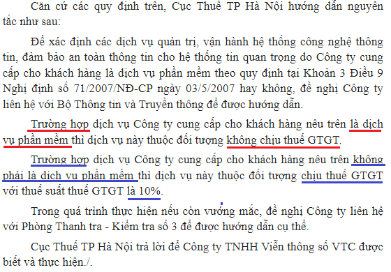
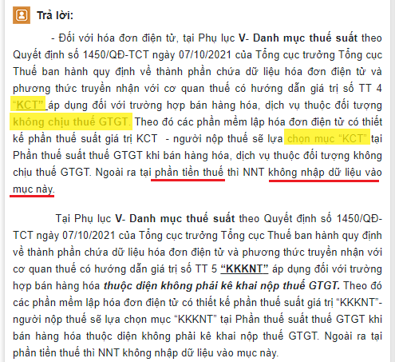
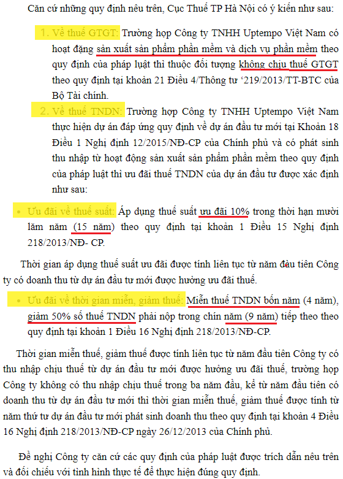

Phần mềm có chịu thuế không? Thuế suất thuế GTGT của phần mềm? Dịch vụ phần mềm có được ưu đãi thuế? Ưu đãi thuế TNDN đối với Doanh nghiệp sản xuất, kinh doanh phần mềm như nào? Kế toán Diệu Tâm xin giải đáp những vướng mắc trên:
1. Thuế suất thuế GTGT của phần mềm:
Theo Khoản 13, Điều 4 của Nghị định 181/2025/NĐ-CP hướng dẫn Luật thuế GTGT quy định Đối tượng không chịu thuế GTGT:
13. Chuyển giao công nghệ theo quy định của Luật Chuyển giao công nghệ; chuyển nhượng quyền sở hữu trí tuệ theo quy định của Luật Sở hữu trí tuệ; sản phẩm phần mềm và dịch vụ phần mềm theo quy định của pháp luật về công nghệ thông tin, pháp luật về công nghiệp công nghệ số và pháp luật liên quan. Trường hợp chuyển giao công nghệ, chuyển nhượng quyền sở hữu trí tuệ có kèm theo chuyển giao máy móc, thiết bị thì cơ sở kinh doanh phải tách riêng giá trị công nghệ chuyển giao, giá trị quyền sở hữu trí tuệ chuyển nhượng để xác định đối tượng không chịu thuế giá trị gia tăng; trường hợp không tách riêng được thì toàn bộ giá trị hợp đồng thuộc đối tượng chịu thuế giá trị gia tăng.
---------------------------------------------------------------------------------
KẾT LUẬN:
Doanh nghiệp phần mềm và dịch vụ phần mềm thuộc diện không chịu thuế GTGT.
Công văn Số: 28298/CT-TTHT của Cục thuế TP Hà Nội ngày 28/04/2020

c. Cách viết hóa đơn phần mềm không chịu thuế:
Theo khoản 1 điều 4 Nghị định 123/2020/NĐ-CP được sửa đổi bởi Điểm a Khoản 3 Điều 1 Nghị định 70/2025/NĐ-CP có hiệu lực từ ngày 01/06/2025:
“1. Khi bán hàng hóa, cung cấp dịch vụ, người bán phải lập hóa đơn để giao cho người mua (bao gồm cả các trường hợp hàng hóa, dịch vụ dùng để khuyến mại, quảng cáo, hàng mẫu; hàng hóa, dịch vụ dùng để cho, biếu, tặng, trao đổi, trả thay lương cho người lao động và tiêu dùng nội bộ (trừ hàng hóa luân chuyển nội bộ để tiếp tục quá trình sản xuất); xuất hàng hóa dưới các hình thức cho vay, cho mượn hoặc hoàn trả hàng hóa) và các trường hợp lập hóa đơn theo quy định tại Điều 19 Nghị định này. Hóa đơn phải ghi đầy đủ nội dung theo quy định tại Điều 10 Nghị định này. Trường hợp sử dụng hóa đơn điện tử phải theo định dạng chuẩn dữ liệu của cơ quan thuế theo quy định tại Điều 12 Nghị định này."
Tại cột thuế suất các bạn sẽ ghi: KCT
Theo giải đáp tại chuyên mục hỏi đáp trên Cổng thông tin điện tử - Bộ tài chính có hướng dẫn:

=> Như vậy: Khi bán hàng hóa, cung cấp dịch vụ kể cả trường hợp hàng hóa dịch vụ không chịu thuế GTGT thì người bán cũng phải lập hóa đơn, và ở dòng thuế suất sẽ ghi KCT, mục tiền thuế sẽ bỏ trống.
Xem thêm: Cách kê khai hóa đơn không chịu thuế GTGT
2. Thuế suất thuế TNDN của phần mềm:
Theo điều 18 và 19 tại Chương V - Ưu đãi thuế TNDN của Nghị định 320/2025/NĐ-CP hướng dẫn Luật thuế TNDN áp dụng từ kỳ tính thuế TNDN 2025, quy định:
Điều 18. Nguyên tắc, đối tượng áp dụng ưu đãi thuế thu nhập doanh nghiệp
2. Ngành, nghề ưu đãi thuế thu nhập doanh nghiệp bao gồm các trường hợp sau:
b) Sản xuất sản phẩm phần mềm; sản xuất sản phẩm an toàn thông tin mạng và cung cấp dịch vụ an toàn thông tin mạng đảm bảo các điều kiện theo quy định của pháp luật về an toàn thông tin mạng; sản xuất sản phẩm, cung cấp dịch vụ công nghệ số trọng điểm, sản xuất thiết bị điện tử theo quy định của pháp luật về công nghiệp công nghệ số; nghiên cứu và phát triển, thiết kế, sản xuất, đóng gói, kiểm thử sản phẩm chip bán dẫn; xây dựng trung tâm dữ liệu trí tuệ nhân tạo theo quy định của pháp luật về công nghiệp công nghệ số;
Điều 19. Thuế suất ưu đãi
1. Áp dụng thuế suất 10% trong 15 năm đối với:
a) Thu nhập của doanh nghiệp từ thực hiện dự án đầu tư mới quy định tại các điểm a, b, c, d và đ khoản 2 Điều 18; thu nhập của doanh nghiệp quy định tại điểm e khoản 2 Điều 18 của Nghị định này;
6. Việc kéo dài thời gian và áp dụng thuế suất ưu đãi
a) Thủ tướng Chính phủ quyết định việc kéo dài thêm thời gian áp dụng thuế suất ưu đãi tối đa không quá 15 năm đối với các trường hợp quy định tại điểm b và điểm c khoản này;
b) Dự án đầu tư mới quy định tại các điểm a, b, d và đ khoản 2 Điều 18 của Nghị định này, có quy mô vốn đầu tư tối thiểu 6.000 tỷ đồng, có ảnh hưởng lớn về kinh tế - xã hội cần đặc biệt khuyến khích;
Điều 20. Miễn thuế, giảm thuế
1. Miễn thuế 04 năm và giảm 50% số thuế phải nộp trong 09 năm tiếp theo đối với:
a) Thu nhập của doanh nghiệp quy định tại khoản 1 Điều 19 của Luật này;
Theo công văn Số: 8441/ CTHN-TTHT của Cục thuế Tp. Hà Nội ngày 1/3/2023

Như vậy:
a) Nếu là DN sản xuất phần mềm:
- Đối với các dự án đầu tư mới sản xuất sản phẩm phần mềm thuộc danh mục sản phẩm phần mềm và đáp ứng quy trình về sản xuất sản phẩm phần mềm theo quy định của pháp luật, được hưởng thuế suất ưu đãi 10% trong thời hạn 15 năm, miễn thuế 4 năm, giảm 50% số thuế phải nộp trong 9 năm tiếp theo.
Tức là:
- Những DN sản xuất phần mềm kể từ khi thành lập áp dụng thuế suất như sau:
+ Từ năm thứ 1 đến năm thứ 4: Sẽ được miễn thuế TNDN.
+ Từ năm thứ 5 đến năm thứ 13 (9 năm tiếp theo): Giảm 50% thuế TNDN với thuế suất 10% -> Như vậy chỉ phải nộp 5% thuế TNDN.
+ Từ năm thứ 14 đến năm thứ 15 (thuế suất 10% trong 15 năm): Thuế suất là 10%.
+ Từ năm thứ 16 trờ đi: Nộp thuế TNDN như Doanh nghiệp bình thường.
b) Nếu là DN mua/bán phần mềm thì không được hưởng ưu đãi về thuế TNDN như trên.
---------------------------------------------------------------------------------------------
| Chi tiết về sản phẩm phần mềm và dịch vụ phần mềm theo quy định, các bạn có thể xem chi tiết tại Thông tư 09/2013/TT-BTTTT ngày 08/04/2013 của Bộ thông tin và truyền thông. |
--------------------------------------------------------------------------------------
c) Phân bổ doanh thu, chi phí ưu đãi thuế TNDN:
Căn cứ theo Điều 23 của Nghị định 320/2025/NĐ-CP
Điều 23. Điều kiện áp dụng ưu đãi thuế thu nhập doanh nghiệp
Điều kiện áp dụng ưu đãi thuế thu nhập doanh nghiệp thực hiện theo quy định tại Điều 18 Luật Thuế thu nhập doanh nghiệp.
1. Trong thời gian đang được hưởng ưu đãi thuế thu nhập doanh nghiệp nếu doanh nghiệp thực hiện nhiều hoạt động sản xuất, kinh doanh thì doanh nghiệp phải hạch toán riêng thu nhập từ hoạt động sản xuất, kinh doanh được ưu đãi thuế quy định tại các Điều 4, 19, 20 và 21 của Nghị định này với thu nhập từ hoạt động sản xuất, kinh doanh không được ưu đãi thuế.
a) Trường hợp trong kỳ tính thuế, doanh nghiệp không hạch toán riêng thu nhập từ hoạt động sản xuất, kinh doanh được hưởng ưu đãi thuế và thu nhập từ hoạt động sản xuất, kinh doanh không được hưởng ưu đãi thuế thì phần thu nhập của hoạt động sản xuất, kinh doanh ưu đãi thuế xác định bằng tổng thu nhập chịu thuế nhân với tỷ lệ phần trăm (%) doanh thu hoặc chi phí được trừ của hoạt động sản xuất, kinh doanh ưu đãi thuế so với tổng doanh thu hoặc tổng chi phí được trừ của doanh nghiệp trong kỳ tính thuế;
b) Trường hợp có khoản doanh thu hoặc chi phí được trừ không thể hạch toán riêng được thì khoản doanh thu hoặc chi phí được trừ đó xác định theo tỷ lệ giữa doanh thu hoặc chi phí được trừ của hoạt động sản xuất, kinh doanh hưởng ưu đãi thuế trên tổng doanh thu hoặc chi phí được trừ của doanh nghiệp.
---------------------------------------------------------------------------------------------
Kế toán Diệu Tâm xin chúc các bạn thành công!